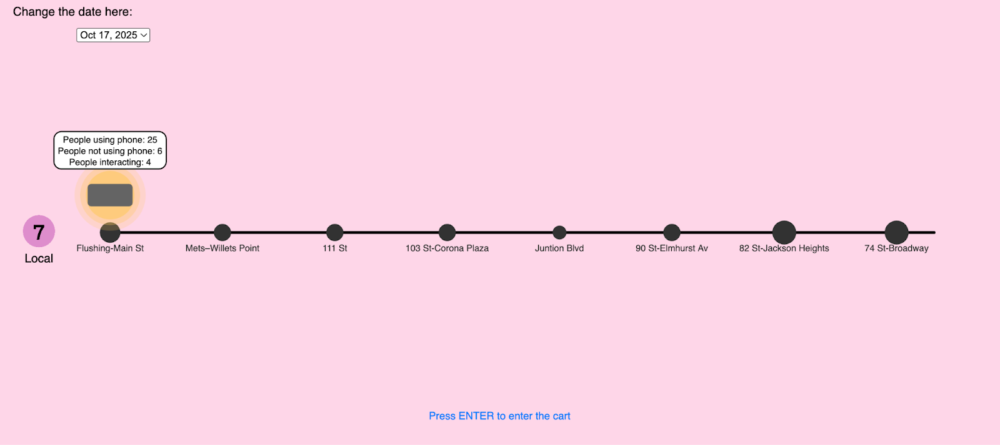
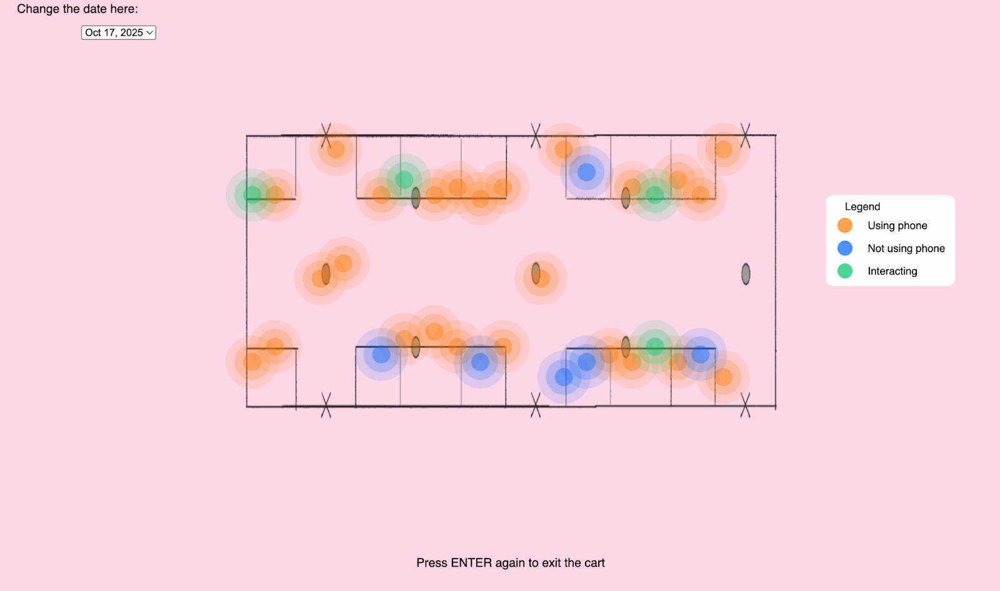

This project uses data I collected over three days to visualize how passengers in the first car of the 7 local train use their phones, interact, or stay disengaged, revealing patterns of connection and isolation in a shared public space.


This project visualizes human behavior in the first cart of the 7 local train between Flushing–Main St and 74th St–Broadway, based on three days of data I collected on how passengers used their phones, interacted, or remained disengaged. Users can explore each station, view heat maps, and compare patterns across days, with light and color reflecting the energy and individuality of the environment.
The visualization emphasizes personal presence within a shared space, revealing how people occupy the same environment yet often remain isolated or disconnected.
Skills: HTML, CSS, JavaScript
I built the Subway visualization using JavaScript, with interactive features allowing users to drag the cart to explore each station, toggle between dates, and view the cart’s heat map. HTML and CSS were used to display the visualization and the project description on the webpage.